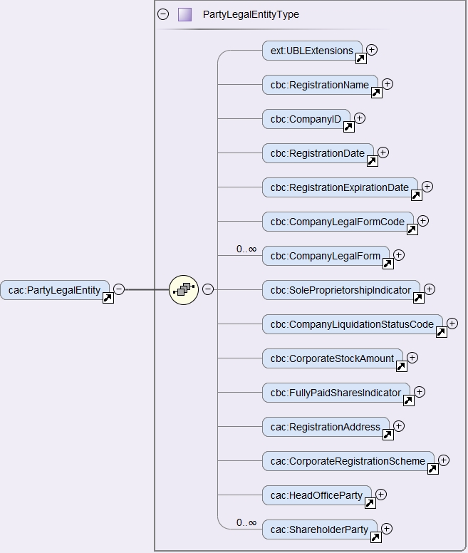
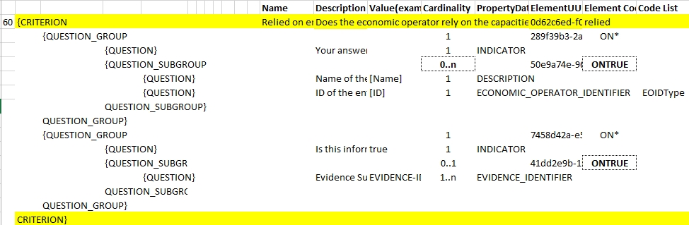
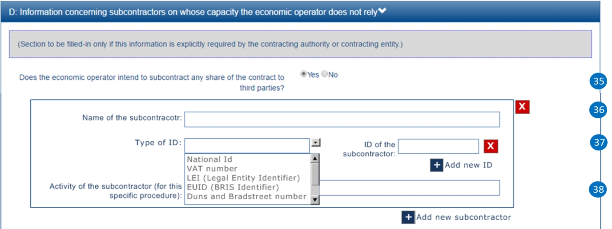

Economic Operator
Related information requirements
See formal requirements related to the economic operators in the e-Sens site: (tbr092-001, _tbr092-008).
Table 29. Information requirement about the ESPD Response and the economic operators
REQUIREMENT |
One ESPD Response per economic operator. The ESPD-EDM, as all the previous versions of the ESPD, requires that every economic operator that participates in one tender provide its own ESDP Response document. This affects sole traders that rely on other entities for the execution of the contract (e.g. subcontractors) and groups of economic operators, e.g. a Joint Venture or a Consortium, and all the sub-contractors on which each economic operator of the group relies on to meet the selection criteria. Moreover, each EO should submit an ESPD Response per lot or group of Lots which tenders to. |
Table 30. Information requirement about the identifiers of the economic operators
REQUIREMENT |
For the identification of the economic operators the UBL-2.3 element cac:PartyIdentification/cbc:ID must be used. The following two attributes of the cbc:ID element (CCT IdentifierType element) must be used: (1) @schemeID, a code from the Code List EOIDType must be used; (2) @schemeAgencyID, the default value "OP" must be used; (3) Optionally, the attribute @schemeName can be used to place the 'Name' of the code (see the column 'Name' in the above mentioned Code List). For the ESPD-EDM the preferred type code for the @schemID is VAT. |
Table 31. Information requirement about the groups of economic operators
REQUIREMENT |
All economic operators belonging to a group (e.g. a Joint Venture, a Consortium, etc.) must specify the name of the group exactly with the same spelling (and respecting capital and lower cases, punctuation, and symbols) in each of their ESPD Responses. |
|
| a| About the definition of economic operator Beware that this ESPD-EDM specification defines economic operator based on the one provided by the 2014 Directives, where an economic operator is "any natural or legal person or public entity, including any temporary association of undertakings, which offers the execution of works and/or a work, the supply of products or the provision of services on the market. Information about the party submitting the qualification". According to this definition one group of suppliers associated in a Joint Venture or in a Consortium, or any other type of undertaking is also an economic operator. However, due to the previous requirement establishing that each company participating in a tender must prepare its own ESPD Response document, the ESPD-EDM specification never uses the term "economic operator" to refer to a group of persons and/or companies but only to refer to each natural or legal person or public entity that participates in a tender. Therefore, in the context of the ESPD the definition of economic operator has been rephrased as "any natural or legal person or public entity, including any temporary association of undertakings, which offers the execution of works and/or a work, the supply of products or the provision of services on the market. Information about the party submitting the qualification". |
A couple of examples. According to the previous requirements:
-
One tender submitted by a sole trader that relies on two sub-contractors will have to include three ESPD Requests, one for the sole trader and one per each of the sub-contracted entity.
-
One tender submitted by a Consortium composed of three economic operators, two of which rely on two sub-contracted entities and the third one relies on five sub-contracted entities, will have to include 3 + 2 + 5 (ten) ESPD Requests.
-
Note that both examples are made to represent who should provide an ESPD Response. But it is also worth to note that all the participants have to provide an ESPD per Lot to which tender.
The information that the economic operator (EO) has to provide is relatively abundant, especially if the EO is the lead entity of a group. UBL does provide a class cac:EconomicOperatorParty with sufficient data elements to identify the economic operator, its role, its representatives, physical location, officially registered address and other.
As the whole ESDP-EDM is based entirely on the UBL-2.3 XSD (W3C) Schemas, these schemas are to be used for ESPD.
Nonetheless some data requested in the ESPD are not modeled in UBL-2.3, namely those aiming at purposes going beyond the identification of the economic operator; e.g. data with statistical purposes; or to ensure the transparency of the procurement procedure; other.
Therefore in the ESPD-EDM, the information about the economic operator is spread in two different places:
-
The UBL-2.3 cac:EconomicOperatorParty component; and
-
In criteria data structures: following the solution adopted for Version ESPD-EDM, the ESPD-EDM defines several criteria classified as CRITERION.OTHER.EO_DATA.* (where the * refers to different branches and leaves of a different structures about the economic operator (e.g. SHELTERED_WORKSHOP, TOGETHER_WITH_OTHERS, etc.). The XML instances use criteria components (UBL-2.3 cac:TenderingCriterion) to structure these data. The sub-sections below cover both.
XSD Schemas
cac:EconomicOperatorParty
The UBL-2.3 cac:EconomicOperatorParty has three common aggregate components, the XSD Schema looks like this:

Figure 197. cac:EconomicOperatorParty XSD, global view
-
cac:QualifyingParty: is used to place data about the economic operator that is available from an official list, tenderer register or (pre)qualification system, such as official classification schemes, certificates, the number of employees, references used for the classification, etc.;
-
cac:EconomicOperatorRole: use to place the role of the economic operator;
-
cac:Party: used to place the data to identify the EO and its contact.
cac:QualifyingParty
The diagram below shows the XSD element that will hold the data required by the ESPD (see mock-up 1/7, too). Beware that:
-
Identification of the economic operator: The Identifier assigned by the register or (pre)qualification system to the economic operator is placed in the element /cac:EconomicOperatorParty/cac:QualifyingParty/cac:Party/cac:PartyIdentification (more details on this below and in the XML example);
-
(Pre)qualification system: The Identifier and name of the (pre)qualification system is captured from e-Certis. The only datum that is necessary to keep in the XML is the identifier of the system provided by e-Certis. This identifier will be used as the value for the attribute schemeAgencyID (always compulsory) of the element /cac:EconomicOperatorParty/cac:QualifyingParty/cac:Party/cac:PartyIdentification. This way:
-
The (pre)qualification system is perfectly identified (and trusted, as it is registered in eCertis); and
-
The economic operator, identified with the number used in that (pre)qualification system, is linked inequivocally to that (pre)qualification system.
-
-
References and classification: The references linked to the classification of the EO are place in the component cac:QualifyingParty/cac:CompletedTask.
-
For this version of the ESPD the only expected data about the reference is a short description identifying the task as described in the (pre)qualification system. However if you take a look at this common aggregate component you will observe that it caters for other relevant data.
-
Similarly, this version of the ESPD-EDM, does not expect a complex representation of possible (optional) classification schemes. However the component cac:BusinessClassificationScheme, associated to cac:QualifyingParty allows complex hierarchical classifications.
-
-
SME and number of employees: The number of employees determine the classification of the company as Micro, Small, Medium or Large company. The cac:QualifyingParty component provides two place-holders that are used by this ESPD-EDM (see also mock-ups above) :
-
cac:QualifyingParty/cbc:EmployeeQuantity, for the number of employees; and
-
cac:QualifyingParty/cac:Party/cbc:IndustryClassificationCode to indicate whether the EO is a micro, small, medium or large company (or simply an SME). This code is defined in the Code List economic-operator-size. See also sections "Expected Elements" and "XML example" for more details.
-
-
Turnover: For statistical purposes the ESPD-EDM asks this datum to reflect the financial capability of the economic operator (see mock-ups above). This datum is to be placed in cac:QualifyingParty/cac:FinancialCapability/ValueAmount.

Figure 198. cac:QualifyingParty element, XSD
cac:EconomicOperatorRole
The UBL-2.3 element for the role of the economic operator is quite straightforward and typical in UBL: it provides a pair code + description (see Code List EoRoleType for the codes and descriptions; see also the XML example below).

Figure 199. Role of the economic operator
cac:Party
The XSD diagram below shows (in blue) the elements for which data are expected in the ESPD Response for the cac:Party element of the economic operator.

Figure 200. The Party of the economic party
The figures below show the cac:QualifyingParty sub-components cac:BusinessClassificationScheme and FinancialCapability, and cac:CompletedTask in a bit more of detail. At present, the ESPD-EDM only uses one field, cbc:Description for the references and classifications and `cbc:Amount`for the Turnover.

Figure 201. The rich structure of a UBL-2.3 'Classification Scheme' for the representation of taxonomies

Figure 202. The structure of UBL-2.3 'Capability'

Figure 203. The structure of the UBL-2.3 Completed Task (used for references)
UBL-2.3 provides a component to hold very specifically the data to identify the economic operator as it officially registered in a Business Register. This XSD diagram below shows the elements of this component cac:LegalEntityParty. This ESPD-EDM specification recommends to use it as an alternative (or supplementary) way to identify the economic party.

Figure 204. The UBL-2.3 Legal Entity Party
Expected elements
Please, remember that the elements cac:ContractingAuthority, cac:ProcurementProject, cac:ProcurementProjectLot and cac:AdditionalDocumentReference are expected in the ESPD Request, too. However, for the sake of brevity, and as they are taken from the ESPD Request and 'copied' in the ESPD Response, they have not been re-explained in this section about the ESPD Response. Therefore for details on those elements please refer to the section 2. The ESPD Request document.
|
Remember that if the economic operator belongs to a group (i.e. it is not a sole contractor), the element /cac:QualificationApplicationResponse/cbc:EconomicOperatorGroupName becomes compulsory and that the spelling of the name must be identical for lead entity, all the members of the group and all the entities that participate in the procedure. |
Table 32. Economic operator, expected elements
Class name: |
cac:EconomicOperatorParty |
Definition: |
Any natural or legal person or public entity, including any temporary association of undertakings, which offers the execution of works and/or a work, the supply of products or the provision of services on the market. Information about the party submitting the qualification. |
Business rule(s): |
Common (BR-RESP-10) |
File: |
ubl-2.3/xsdrt/common/UBL-CommonAggregateComponents-2.3.xsd |
Path: |
/QualificationApplicationResponse/cac:EconomicOperatorParty |
Context of use: |
The ESPD Response document. |
| Components | Type | Card | Description | Requirements |
|---|---|---|---|---|
cac:QualifyingParty |
Associated class |
1 |
The distinctive features or characteristics qualifying an economic operator to be a party in a tendering process (e.g., number of employees, number of operating units, type of business, technical and financial capabilities, completed projects). |
Information Requirement: tbr92-001 Rule: This element is compulsory in the ESPD-EDM as it is the natural placeholder for several relevant data about the Economic Operator. Rule scope: BR-RESP-10-01 |
cac:EconomicOperatorRole |
Associated class |
1 |
The function of the economic operator when bidding from a consortium (Sole tenderer, member of a group, etc.). |
Information Requirement: Rule: This element is compulsory in the ESPD-EDM because depending on it different sets of data will be required or not, shown or hidden, processed or skipped. |
cac:Party |
Associated class |
1 |
Main set of data used to identify and contact the economic operator, such as official identifiers, name, address, contact person, representatives, etc. |
Information Requirement: Rule: (See expected elements and rules below in the table about this Party). |
Table 33. Qualifying Party, expected elements
Class name: |
cac:QualifyingParty |
Definition: |
The distinctive features or characteristics qualifying an economic operator to be a party in a tendering process (e.g., number of employees, number of operating units, type of business, technical and financial capabilities, completed projects). |
Business rule(s): |
(BR-RESP-10-01) |
File: |
ubl-2.3/xsdrt/common/UBL-CommonAggregateComponents-2.3.xsd |
Path: |
/QualificationApplicationRequest/cac:EconomicOperatorParty/cac:QualifyingParty |
Context of use: |
Economic Operator in the ESPD Response document. |
| Components | Type | Card | Description | Requirements |
|---|---|---|---|---|
cbc:EmployeeQuantity |
Quantity |
0..1 |
The number of people employed by the economic operator participating in the tender. |
Information Requirement: tbr92-001 Rule: Integer value expected. |
cac:BusinessClassificationScheme/cbc:Description |
Text |
0..n |
The text describing one official classification assigned by an official list or (pre)qualification system to the economic operator. |
Information Requirement: tbr92-001 Rule: Only the 'Description' is expected, but the component cac:ClassificationScheme offers other rich possibilities (see the UBL-2.3 model in the distribution package or in the original source for more details). Rule: Integer value expected. |
cac:FinancialCapability/cbc:ValueAmount |
Amount |
0..1 |
A monetary amount as a measure of this capability. |
Information Requirement: tbr92-001 Rule: Use it to place here the general Turnover of the EO (for statistical purposes). Compulsory assignment of a value to the attribute currency. The default value should be set to 'EUR'. Compulsory use of the Code List currency. Rule scope: (BR-OTH-01#16, BR-OTH-03) |
cac:CompletedTask/cbc:Description |
Text |
0..1 |
Text describing the works, supplies or services executed, delivered or performed in a procurement project (normally used as a reference for the classification of the economic operator. |
Information Requirement: tbr92-001 Rule: Use it to place here the references that were used in the (pre)qualification system to get the specific classification related to those references. |
cac:Party/cac:PartyIdentification/cbc:ID |
Identifier |
1 |
The identifier of the economic operator in an official list, register or (pre)qualification system. |
Information Requirement: tbr92-001 Rule: The attribute schemeAgencyID must hold the value retrieved from eCertis that identifies unequivocally the (pre)qualification system. If, for any reason, that value is not available use the default schemeAgencyID "OP" and the cac:EconomicOperatorParty/cac:QualifyingParty/cac:Party/cac:PartyIdentification/cbc:ID for the value of the identifier. Additionally you can use the data structure "registered" to specify an alternative or additional name, identifier and description. The code list EOIDType should be used to indicate the type of identifier used as a value of the schemeID attribute, e.g. schemeID="VAT"). Rule scope: (BR-RESP-80-S10, BR-RESP-80-S20), Common (BR-RESP-50, BR-OTH-02) |
Table 34. Economic operator role, expected elements
Class name: |
cac:EconomicOperatorRole |
Definition: |
The function of the economic operator when bidding from a consortium (Sole tenderer, group leader, member of a group, etc.). |
File: |
ubl-2.3/xsdrt/common/UBL-CommonAggregateComponents-2.3.xsd |
Path: |
/QualificationApplicationRequest/cac:EconomicOperatorParty/cac:EconomicOperatorRole |
Context of use: |
Economic Operator in the ESPD Response document. |
| Components | Type | Card | Description | Requirements |
|---|---|---|---|---|
cbc:RoleCode |
Code |
1 |
Identifies the role of the economic operator in the bid. |
Information Requirement: tbr92-008 Rule: Compulsory use of the Code List EoRoleType. Rule scope: (BR-RESP-10-03, BR-OTH-01, BR-OTH-01#15, BR-OTH-03) |
cbc:RoleDescription |
Text |
0..1 |
The text describing the role of the economic operator in the bid. |
Information Requirement: tbr92-008 Rule: Software applications should retrieve and reuse the description from the Code List EoRoleType. Rule scope: Common (BR-RESP-10-02) |
Table 35. (Qualifying) economic operator party, expected elements
Class name: |
cac:Party |
Definition: |
Main set of data used to identify and contact the economic operator, such as official identifiers, name, address, contact person, representatives, etc. |
File: |
ubl-2.3/xsdrt/common/UBL-CommonAggregateComponents-2.3.xsd |
Path: |
/QualificationApplicationResponse/cac:EconomicOperatorParty/cac:Party |
| Components | Type | Card | Description | Requirements |
|---|---|---|---|---|
cac:PartyIdentification/cbc:ID |
Identifier |
1 |
An identifier that identifies the economic operator, such as the VAT number, the company registration number in a Business Register, other. |
Information Requirement: tbr92-001. Rule: When possible use the VAT identification of the contracting body (see the VIES platform for a EU cross-border national VAT number verification system). When not possible a different identifier may be used. For a very complete way of identification of the Party it is highly recommended to, additionally to the cac:Party/cac:Identification/cbc:ID, use the UBL-2.3 component cac:PartyLegalEntity: this element is the perfect placeholder for the data officially registered in a Business Register (see UBL-2.3 model, and XSD diagram above). Rule scope: Common (BR-OTH-02) |
cbc:EndPointID |
Identifier |
0..1 |
Electronic address of the contracting body. |
Information Requirement: tbr92-001. Rule: Use it for online services (e.g. Web Services, REST services, Delivery ID, ftp, etc. For the official web site of the Party use always the cac:Party/cbc:WebsiteURI). An end-point identifier MUST have a scheme identifier attribute (e.g.eSENSParty Identifier Scheme). Should be considered for all actors (buyer, service provider, economic operator) as an eDeliveryID. Rule scope: Common (BR-RESP-10-08) |
cac:PartyName/cbc:Name |
Text |
1 |
The name of the economic operator. |
Information Requirement: tbr92-001. Rule: Use the official name of the Party as officially registered. Be accurate in its spelling. |
cbc:IndustryClassificationCode |
Code |
1 |
Used to indicate whether the company is a micro, small, medium or large enterprise. |
Information Requirement: tbr92-004. Rule: Used only for statistical purposes. Compulsory use of code list economic-operator-size, to determine EO’s company is micro, small, medium or large. |
cbc:WebsiteURI |
Identifier |
0..1 |
The website of the economic operator. |
Information Requirement: tbr92-012. Rule: Use it for the official web site of the service provider. |
Table 36. Economic operator postal address, expected elements
Class name: |
cac:PostalAddress |
Definition: |
Postal address information. |
Business rule(s): |
None |
File: |
ubl-2.3/xsdrt/common/UBL-CommonAggregateComponents-2.3.xsd |
Path: |
/QualificationApplicationResponse/cac:EconomicOperatorParty/cac:Party/cac:PostalAddress |
| Components | Type | Card | Description | Requirements |
|---|---|---|---|---|
cac:AddressLine/cbc:Line |
Text |
0..1 |
The main address line in an address. Usually the street name and number or post office box. |
Information Requirement: tbr92-012. Rule: None. |
cbc:CityName |
Text |
0..1 |
The common name of a city where the address is located. |
Information Requirement: tbr92-012. Rule: None. |
cbc:PostalZone |
Text |
0..1 |
The identifier for an addressable group of properties according to the relevant postal service, such as a ZIP code or Post Code. |
Information Requirement: tbr92-012. Rule: None. |
cac:Country/cbc:IdentificationCode |
Code |
1 |
A code that identifies the country. |
|
cac:Country/cbc:Name |
Text |
0..1 |
The name of the country. |
Information Requirement: tbr92-012. Rule: None. |
Table 37. Contact of the economic operator, expected elements
Class name: |
cac:Contact |
Definition: |
Used to provide contacting information for a party in general or a person. |
Business rule(s): |
None |
File: |
ubl-2.3/xsdrt/common/UBL-CommonAggregateComponents-2.3.xsd |
Path: |
/QualificationApplicationResponse/cac:EconomicOperatorParty/cac:Party/cac:Contact |
| Components | Type | Card | Description | Requirements |
|---|---|---|---|---|
cbc:Name |
Text |
0..1 |
The name of the contact point. |
Information Requirement: tbr92-012. Rule: None. |
cbc:Telephone |
Text |
0..1 |
A phone number for the contact point. |
Information Requirement: tbr92-012. Rule: None. |
cbc:Telefax |
Text |
0..1 |
A fax number for the contact point. |
Information Requirement: tbr92-012. Rule: None. |
cbc:ElectronicMail |
Text |
0..1 |
An e-mail address for the contact point. |
Information Requirement: tbr92-012. Rule: None. |
Table 38. Service provider, expected elements
Class name: |
cac:ServiceProviderParty/cac:Party |
Definition: |
Main information about the service provider. |
Business rule(s): |
None |
File: |
ubl-2.3/xsdrt/common/UBL-CommonAggregateComponents-2.3.xsd |
Path: |
/QualificationApplicationResponse/cac:EconomicOperatorParty/cac:Party/cac:ServiceProviderParty/cac:Party |
| Components | Type | Card | Description | Requirements |
|---|---|---|---|---|
cbc:WebsiteURI |
Identifier |
0..1 |
The website of the service provider. |
Information Requirement: tbr070-021. Rule: Use it for the official web site of the service provider. Reserve the EndPointID for online services (e.g. web, REST, ftp services, etc.) |
cbc:EndpointID |
Identifier |
0..1 |
Electronic address of the service provider. |
Information Requirement: tbr070-021. Rule: Use it for online services (e.g. Web Services, REST services, Delivery ID, ftp, etc. For the official web site of the Party use always the cac:Party/cbc:WebsiteURI). An end-point identifier MUST have a scheme identifier attribute (e.g.eSENSParty Identifier Scheme). Should be considered for all actors (buyer, service provider, economic operator) as an eDeliveryID. Rule scope: Common (BR-RESP-10-08) |
cac:PartyIdentification/cbc:ID |
Identifier |
1 |
The national identifier of a service provider as it is legally registered (e.g. VAT identification). |
Information Requirement: tbr070-021. Rule: An identifier for the service provider must always be provided. Compulsory use of the attribute SchemeAgencyID. When possible use the VAT identification of the service provider (see the VIES platform for a EU cross-border national VAT number verification system). See XML example below. Rule scope: Common (BR-RESP-10-11, BR-OTH-02) |
cac:PartyName/cbc:Name |
Text |
1 |
The name of the service provider. |
Information Requirement: tbr070-021. Rule: The name of the service provider must always be specified. Supply the official registered name of the service provider. Rule scope: Common (BR-RESP-10-09) |
cac:PostalAddress/cac:Country/cbc:IdentificationCode |
Code |
1 |
The code that identifies the country of the service provider. |
Information Requirement: tbr070-021. Rule: The country of the service provider must always be specified. Compulsory use of the Code List Country. Rule scope: (BR-RESP-10-10, BR-OTH-01, BR-OTH-01#5, BR-OTH-03) |
-
The value expected for the EO identifier is of type Identifier. For the identifier of the EO it is also required to specify the type of identifier, and a closed list of possible types is proposed. EOs must use one of the available values, but the preferred one is the VAT number. Beware that the data structure does not keep the type of the identifier. This is because the this type code is placed in the attribute @schemeID of the cac:ResponseValue/cbc:ResponseID element (and the @schemeAgencyID attribute must be set to the default OP). See the information requirement about the identifiers of the economic operators at the beginning of the section. See also next sections about the responses, XSD schemas and XML example.
As you will see next, the information required about the economic operators varies depending on several factors:
-
Is the economic operator a sole trader or does it belong to a group?
-
If it belongs to a group, is the economic operator the leader of the group, a member or another entity (see the different types of 'roles' below);
-
Does the economic operator rely on other entities to fulfill the selection criteria?
-
Is the procurement procedure divided into lots?
One relevant aspect is the Role of the economic operator. The ESPD-EDM defines five different roles for the EO. The information to be provided by each role varies depending on whether the EO is:
-
Sole tenderer / Group Leader: Sole entity or, in case of Consortium, Joint Venture or other types of groups, the leader of the group. In this case:
-
The sole contractor or leader will have to produce a complete ESDP;
-
The sole contractor or leader will also have to identify the rest of the procurers (in the case of a group);
-
The sole contractor or leader will have to identify the entities upon which it relies (and about those on which the entities it relies on rely).
-
The sole contractor or leader will have to identify the entities upon which it does not relies.
-
The sole contractor or leader will have to specify the subcontracted proportion of the group (in the selection criteria "Subcontracted Proportion" of the ESPD).
-
-
Group member: Member (not leader) of the Consortium, Joint Venture or other type of group. In this case:
-
The member of the group will have to produce a complete ESPD;
-
The member of the group does not have to identify the rest of the procurers or entities.
-
-
Other entity (relied upon): Entity on which the main contractor, the group or another subcontractor relies in order to meet the selection criteria. In this case:
-
The entity will have to produce an ESPD;
-
The entity will not have have to identify the rest of the procurers or entities. Beware that an entity could have again another entity which it relies on or a a sub-contractor: in this case those entities and sub-contractors will have also to produce their own ESPD Response.
-
-
Subcontractor: Entity on which the main contractor, the group or another subcontractor does not rely in order to meet the selection criteria. In this case:
-
The entity will have to produce an ESPD, too;
-
The entity does not have to provide information about the selection criteria;
-
The entity does not have to provide information about the reduction of the number of qualified candidates.
-
The simplest case
The simplest case is when:
-
The economic operator (EO) is a sole tenderer
-
The EO does not rely on other entities
-
The EO has to provide an ESPD Response per Lot that wishes to tender
Notice the following:
-
Sole contractor. We know that the EO is a sole contractor when:
-
The role specified is 'Sole contractor'; and
-
The EO states that it does not participate together with others; and
-
The EO states that it does not participate in a group;
-
-
Not an SME. . The definition of what is an SME is provided in the EU recommendation 2003/361. Notice that ESPD asks for the number of employees and turnover. This can be used by the software applications to validate the consistency of the data provided by the EO with the definition. By the way, these data are all placed in the cac:QualifyingParty element. See the XSD diagrams above the and the XML example below for details on the use of the cac:QualifyingParty and sub-components.
Sheltered workshop
If the economic operator answers Yes the fields about the 'percentage of disabled/disadvantaged workers and the category of handicap to which they belong to should shown, validated or processed.
Data structure for a sheltered workshop or social business in case of reserved procurement:
Figure 222. Sheltered workshop or social business - data structure
EO registered in a (Pre)Qualification System (PQS)
One of the questions asked is whether the economic operator is registered on an official list (e.g. on a national Pre-Qualification System). In the case the EO answers Yes, the software application should ask the EO for this other data about which the evaluators may be interested in
Beware that the (pre)qualification system the EO is registered on must be know by the software application. One proposal is that each (pre)qualification systems is perfectly identified and registered in e-Certis so the applications can use it and trust it (and even download certificates from it). Note that This is part of the schema envisioned in the Once Only Principle. However if this were not possible (because e-Certis does not implement this timely, for example), the data structure for the PQS provides an alternative field to keep the name of the (pre)qualification system; see data structure below.
In case the EO is registered on several pre-qualification systems, the EO will need to choose the one that applies to this particular procurement procedure. The EO will also be required to provide the identification of the EO in the selected pre-qualification system.
Data structure for the (pre)qualification of the economic operator by an official list or similar:
-
The identifier assigned by the (pre)qualification system to the economic operator is required. This value however is placed in the element cac:QualifyingParty/cac:Party/cac:PartyIdentification/cbc:ID and therefore is not required in the data structure.
-
The name of an alternative or additional (pre)qualification system (PQS) can also be provided by the EO. In principle this is not necessary as the PQS identifier is the value of the attribute @schemeAgencyID of the element cbc:ID.
Figure 223. Pre-qualification-related data structure
Data structure to identify the rest of the EOs that are members of the group:
In the ESPD the Group leader must identify the rest of economic operators that participate in the group. See the rest of the mock-ups and data structure below to see how, additionally, it also identifies other entities (e.g. sub-contractors).
Notice that:
-
The values expected for the name and activity are texts.
-
The value expected for the EO identifier is of type Identifier. For the identifier of the EO it is also required to specify the type of identifier, and a closed list of possible types is proposed (see Code List EOIDType. EOs must use one of the available codes, but the preferred one is the VAT number. Beware that the data structure does not keep the type of the identifier. This is because this type code is placed in the attribute @schemeName of the cac:ResponseValue/cbc:ResponseID element (and the @schemeAgencyID attribute must be set to the default OP). See information requirements at the beginning of the section. See also next sections about the responses, XSD schemas and XML example.
Figure 226. Group of EO, data structure
Certificates about contributions to the Tax Agency and/or Social Security
Data structure for the certificates about contributions to the Tax Agency and/or Social Security:

Figure 227. Contributions certificates
Mock-up: Information about reliance on the capacities of the other entities
As explained above, the Sole tenderer or the Leader of a group will have to provide information about the entities it relies on in order to meet the selection criteria. The mock-up below shows the set of data the ESPD-EDM expects from this role. Remember that this information does not need to be supplied by the members of a group or other entities.

Figure 228. EO Roles-entities relied on, mock-up
Data structure for the entities upon which the EO relies on:

Figure 229. Relied on entities - data structure
Mock-up: Information about third parties on which the EO does not rely on
The Sole contractor or the Leader of a group will have also to provide information about subcontractors on whose capacity the economic operator does not rely. Remember that this information does not need to be supplied by the members of a group or other entities.

Figure 230. EO Roles-entities not relied on, mock-up
Data structure for the entities upon which the EO does not relies on:
Figure 231. Not relied on entities - data structure
XML Example
This example contains all the data about an economic operator. Beware that the basic identification data is placed into the cac:EconomicOperatorParty component, whilst the rest of the data (namely for statististical purposes) is structured in the data structures described above.
Economic operator data - XML example
<!-- The group of the name is at the root of the document -->
<!-- The name of the group (Consortium, Joint Venture, etc.) if the tenderer is not a sole contractor -->
<cbc:EconomicOperatorGroupName>ACME-Consortium</cbc:EconomicOperatorGroupName>
<!-- Root elements removed for the sake of brevity -->
<!-- Economic Operator Data -->
<cac:EconomicOperatorParty>
<cac:QualifyingParty>
<cbc:EmployeeQuantity>12167</cbc:EmployeeQuantity>
<cac:FinancialCapability>
<cbc:ValueAmount currencyID="EUR">1203000000</cbc:ValueAmount>
</cac:FinancialCapability>
<cac:Party>
<!-- This EO company is NOT an SME -->
<cbc:IndustryClassificationCode listID="http://publications.europa.eu/resource/authority/economic-operator-size" listAgencyID="OP" listVersionID="20210317-0">LARGE</cbc:IndustryClassificationCode>
<!-- Notice that the ID and Name of the Pre-Qualification System is in the attributes. They would be captured from e-Certis. -->
<cac:PartyIdentification>
<cbc:ID schemeID="VAT" schemeAgencyID="ROLECE" schemeAgencyName="Registro Oficial de Licitadores y Empresas Clasificadas del Estado">B82387770</cbc:ID>
</cac:PartyIdentification>
</cac:Party>
</cac:QualifyingParty>
<cac:EconomicOperatorRole>
<cbc:RoleCode listID="http://publications.europa.eu/resource/authority/eo-role-type" listAgencyID="OP" listVersionID="20211208-0">group-lead</cbc:RoleCode>
<cbc:RoleDescription>Sole entity or, in case of Consortium, Joint Venture or other types of groups, the leader of the group.</cbc:RoleDescription>
</cac:EconomicOperatorRole>
<cac:Party>
<!--Additional Identifier not provided -->
<cbc:WebsiteURI>https://everis.com/global/en</cbc:WebsiteURI>
<cac:PartyIdentification>
<cbc:ID schemeAgencyID="VAT" schemeAgencyName="OP" schemeID="VIES" schemeURI="link:http://ec.europa.eu/taxation_customs/vies/vieshome.do?locale=es" schemeName="VAT number">B82387770</cbc:ID>
</cac:PartyIdentification>
<cac:PartyName><cbc:Name>Everis, Spain, S.L.U.</cbc:Name></cac:PartyName>
<cac:PostalAddress>
<cbc:CityName>Madrid</cbc:CityName>
<cbc:PostalZone>28050</cbc:PostalZone>
<cac:AddressLine>
<cbc:Line>Manoteras, 52</cbc:Line>
</cac:AddressLine>
<cac:Country>
<cbc:IdentificationCode listID="http://publications.europa.eu/resource/authority/country" listAgencyID="OP" listVersionID="20211208-0">ES</cbc:IdentificationCode>
<cbc:Name>Spain</cbc:Name>
</cac:Country>
</cac:PostalAddress>
<cac:Contact>
<cbc:Name>Xavi Ker; Ruth Gomis; Miguel Verde</cbc:Name>
<cbc:Telephone>+34 91 749 00 00</cbc:Telephone>
<cbc:ElectronicMail>Spain.Proposals.Office@everis.com</cbc:ElectronicMail>
</cac:Contact>
</cac:Party>
</cac:EconomicOperatorParty>
<!-- EO DATA ENDS HERE -->
<!-- EXCLUSION CRITERIA START HERE -->
<!-- Exclusion and selection Criteria, Responses and Evidences removed for the sake of brevity -->
|
Related information requirements
See formal requirements related to the representatives of the economic operator in the e-Sens site: tbr92-021.
Notice that the economic operator may specify more than one representative.
Mock-up
In this example of mock-up the economic operator is specifying two representatives:

Figure 233. EO representatives, mock-up
XSD Schema
In the The ESPD-EDM all the data regarding the representative of the economic operators is placed in the UBL-2.3 component cac:EconomicOperatorParty/cac:Party/cac:PowerOfAttorney. In principle the elements expected by the ESPD-EDM are very few, only the ones represented in the mock-up above. However this UBL element provides other possibilities that may be used in the future or for other purposes (or as a national extension of the ESPD).
Thus, additionally to the expected elements, the cac:PowerOfAttorney component caters also for, at least, two other data could be required at some point (e.g. cac:MandateDocumentReference, see figure below):
-
The place of registration of the representative. The logic first element to look at is the place of birth (this is one of the expected elements). But other elements could be used complementarily: (i) cac:Person/cac:IdentityDocumentReference (A reference to a document that can precisely identify this person (e.g., a residence certificate), (ii) cac:Person/cbc:NationalityID, and/or cac:Person/cbc:CitizenshipCountry.
-
Official documentation demonstrating that the person representing has an authentic mandate (e.g. a reference to a register where this mandate is located). For this the element cac:/PowerOfAttorney/cac:MandateDocumentReference should be used.

Figure 234. EO representatives Power of Attorney, XSD Schema
Notice that the largest part of the data is held in the component cac:EconomicOperatorParty/cac:Party/cac:PowerOfAttorney/cac:AgentParty/cac:Person. The figure below shows (in blue) the expected elements. See the table "Expecte Elements" and the XML example below for the details (e.g. how to use the cac:Person/cac:Contact element to contact the representative.

Figure 235. EO representatives - element Person, XSD Schema
Contact elements, such as telephone and e-mail are in the cac:Contact associated to the the cac:Person information element:

Figure 236. EO representatives - element Contact, inside Person, XSD Schema
Expected Elements
Table 39. Representatives of the economic operator, expected elements
Class name: |
cac:PowerOfAttorney |
Definition: |
Official or legal mandate issued by an authority (e.g. an attorney or a notary) to represent the economic operator as a representative of the economic operator in public procurement procedures. |
Business rule(s): |
Common (BR-RESP-20) |
File: |
ubl-2.3/xsdrt/common/UBL-CommonAggregateComponents-2.3.xsd |
Path: |
/QualificationApplicationResponse/cac:EconomicOperatorParty/cac:Party/cac:PowerOfAttorney |
Context of use: |
The economic operator in the ESPD Response document. Use this element to refer to the natural persons that represent the economic operator. See requirement tbr92-018. |
| Components | Type | Card | Description | Requirements |
|---|---|---|---|---|
cac:PowerOfAttorney/cac:AgentParty/ cac:Person/cbc:FirstName |
Text |
1 |
Name of the natural person. |
Information Requirement: tbr92-009 Rule: Name of the natural person is mandatory. Rule scope: Common (BR-RESP-20-01) |
cac:PowerOfAttorney/cac:AgentParty/ cac:Person/cbc:FamilyName |
Text |
1 |
Family Name of the natural person. |
Information Requirement: tbr92-009 Rule: Family Name of the natural person is mandatory. Rule scope: Common (BR-RESP-20-02) |
cac:PowerOfAttorney/cac:AgentParty/ cac:Person/cbc:BirthDate |
Date |
0..1 |
Date of birth of the natural person. |
Information Requirement: tbr92-009 Rule: None. |
cac:PowerOfAttorney/cac:AgentParty/ cac:Person/cbc:BirthplaceName |
Text |
0..1 |
Place of birth of the natural person. |
Information Requirement: tbr92-009 Rule: None. |
cac:PowerOfAttorney/cac:AgentParty/ cac:Person/cac:ResidenceAddress/cac:AddressLine |
Text |
0..1 |
The main address line in an address. Usually the street name and number or post office box. |
Information Requirement: tbr92-009 Rule: Use it to specify the street name and number of the building of the representative natural person in one line. Beware that specifying the address of a natural person might enter in conflict with the current Data Protection rules. |
cac:PowerOfAttorney/cac:AgentParty/ cac:Person/cac:ResidenceAddress/cbc:PostalZone |
Text |
0..1 |
The identifier for an addressable group of properties according to the relevant postal service, such as a ZIP code or Post Code. |
Information Requirement: tbr92-009 Rule: None. |
cac:PowerOfAttorney/cac:AgentParty/ cac:Person/cac:ResidenceAddress/cbc:CityName |
Text |
0..1 |
The common name of a city where the address is located. |
Information Requirement: tbr92-009 Rule: None. |
cac:PowerOfAttorney/cac:AgentParty/ cac:Person/cac:ResidenceAddress/ cac:Country/cbc:IdentificationCode |
Code |
1 |
A code that identifies the country. |
|
cac:PowerOfAttorney/cac:AgentParty/ cac:Person/cac:ResidenceAddress/ cac:Country/cbc:Name |
Text |
0..1 |
The name of the country. |
Information Requirement: tbr92-009 Rule: Try to use the name provided in the Code List Country and in the language of the user. |
cac:PowerOfAttorney/cac:AgentParty/ cac:Person/cac:Contact/cbc:ElectronicMail |
Text |
0..1 |
An e-mail address for the contact point. |
Information Requirement: tbr92-009 Rule: None. |
cac:PowerOfAttorney/cac:AgentParty/ cac:Person/cac:Contact/cbc:Telephone |
Text |
0..1 |
A phone number for the contact point. |
Information Requirement: tbr92-009 Rule: None. |
cac:PowerOfAttorney/cbc:Description |
Text |
0..n |
The short description for the role of the economic operstors representative and other detailed information on the representation. |
Information Requirement: tbr92-010 Rule: Use line 1 of the description to describe the role of the representative. Use line 2 to provide detailed information on the representation (its forms, extent, purpose, etc.) |
XML Example
Notice that this XML example contains two representatives, as in the mock-up.
Economic operator’s representatives
<!-- Economic Operator Data -->
<cac:EconomicOperatorParty>
<cac:QualifyingParty>
<cbc:EmployeeQuantity>12167</cbc:EmployeeQuantity>
<cac:FinancialCapability><cbc:ValueAmount currencyID="EUR">1203000000</cbc:ValueAmount></cac:FinancialCapability>
<cac:Party>
<!-- This EO company is NOT an SME -->
<cbc:IndustryClassificationCode listID="http://publications.europa.eu/resource/authority/economic-operator-size" listAgencyID="OP" listVersionID="20210317-0">large</cbc:IndustryClassificationCode>
<!-- Notice that the ID and Name of the Pre-Qualification System is in the attributes. They would be captured from e-Certis. -->
<cac:PartyIdentification>
<cbc:ID schemeID="VAT" schemeAgencyID="ROLECE" schemeAgencyName="Registro Oficial de Licitadores y Empresas Clasificadas del Estado">B82387770</cbc:ID>
</cac:PartyIdentification>
</cac:Party>
</cac:QualifyingParty>
<cac:EconomicOperatorRole>
<cbc:RoleCode listID="http://publications.europa.eu/resource/authority/eo-role-type" listAgencyID="OP" listVersionID="20211208-0">sole-tenderer</cbc:RoleCode>
<cbc:RoleDescription>Sole entity or, in case of Consortium, Joint Venture or other types of groups, the leader of the group.</cbc:RoleDescription>
</cac:EconomicOperatorRole>
<cac:Party>
<cbc:WebsiteURI>https://everis.com/global/en</cbc:WebsiteURI>
<cac:PartyIdentification>
<cbc:ID schemeAgencyID="VAT" schemeAgencyName="OP" schemeID="VIES" schemeURI="link:http://ec.europa.eu/taxation_customs/vies/vieshome.do?locale=es" schemeName="VAT number">B82387770</cbc:ID>
</cac:PartyIdentification>
<cac:PartyName><cbc:Name>Everis, Spain, S.L.U.</cbc:Name></cac:PartyName>
<cac:PostalAddress>
<cbc:CityName>Madrid</cbc:CityName>
<cbc:PostalZone>28050</cbc:PostalZone>
<cac:AddressLine>
<cbc:Line>Manoteras, 52</cbc:Line>
</cac:AddressLine>
<cac:Country>
<cbc:IdentificationCode listID="http://publications.europa.eu/resource/authority/country" listAgencyID="OP" listVersionID="20211208-0">ESP</cbc:IdentificationCode>
<cbc:Name>Spain</cbc:Name>
</cac:Country>
</cac:PostalAddress>
<cac:Contact>
<cbc:Name>Xavi Ker; Ruth Gomis; Miguel Verde</cbc:Name>
<cbc:Telephone>+34 91 749 00 00</cbc:Telephone>
<cbc:ElectronicMail>Spain.Proposals.Office@everis.com</cbc:ElectronicMail>
</cac:Contact>
<!-- REPRESENTATIVES of the Economic Operator -->
<!-- Representative 1 -->
<cac:PowerOfAttorney>
<cbc:Description>Total powers to make decisions on behalf of the company.</cbc:Description>
<cbc:Description>Main legal representative with power to make decisions about any aspect related to public procurement contracts with public administrations.</cbc:Description>
<cac:AgentParty>
<cac:Person>
<cbc:FirstName>Mary A.</cbc:FirstName>
<cbc:FamilyName>Smith</cbc:FamilyName>
<cbc:BirthDate>1980-07-17</cbc:BirthDate>
<!-- No element for "street and number" present. The user decided not to provide it -->
<cbc:BirthplaceName>Brussels</cbc:BirthplaceName>
<cac:Contact>
<cbc:Telephone>+322124522</cbc:Telephone>
<cbc:ElectronicMail>masmith@everis.com</cbc:ElectronicMail>
</cac:Contact>
<cac:ResidenceAddress>
<cbc:CityName>Brussels</cbc:CityName>
<cbc:PostalZone>1000</cbc:PostalZone>
<cac:Country>
<cbc:IdentificationCode listID="http://publications.europa.eu/resource/authority/country" listAgencyID="OP" listVersionID="20211208-0">BEL</cbc:IdentificationCode>
<cbc:Name languageID="en">Belgium</cbc:Name>
</cac:Country>
</cac:ResidenceAddress>
</cac:Person>
</cac:AgentParty>
</cac:PowerOfAttorney>
<!-- Representative 2 -->
<cac:PowerOfAttorney>
<cbc:Description>Public Sector Responsible Manager</cbc:Description>
<cbc:Description>Can sign contracts with the buyer on behalf of the Consortium.</cbc:Description>
<cac:AgentParty>
<cac:Person>
<cbc:FirstName>Sergi</cbc:FirstName>
<cbc:FamilyName>Mallol</cbc:FamilyName>
<cbc:BirthDate>1960-06-21</cbc:BirthDate>
<cbc:BirthplaceName>Barcelona</cbc:BirthplaceName>
<cac:Contact>
<cbc:Telephone>+34934947700</cbc:Telephone>
<cbc:ElectronicMail>sergi.mallol@everis.com</cbc:ElectronicMail>
</cac:Contact>
<cac:ResidenceAddress>
<cbc:CityName>Barcelona</cbc:CityName>
<cbc:PostalZone>08020</cbc:PostalZone>
<cac:Country>
<cbc:IdentificationCode listID="http://publications.europa.eu/resource/authority/country" listAgencyID="OP" listVersionID="20211208-0">>ESP</cbc:IdentificationCode>
<cbc:Name languageID="en">Spain</cbc:Name>
</cac:Country>
</cac:ResidenceAddress>
</cac:Person>
</cac:AgentParty>
</cac:PowerOfAttorney>
</cac:Party>
</cac:EconomicOperatorParty>
<!-- Exclusion and selection Criteria, Responses and Evidences removed for the sake of brevity -->-
First Name of the natural person that represents the economic operator.
-
Data of birth of the natural person that represents the economic operator.
-
Notice that no street name and building number or postbox was provided. Hence the element cac:AddressLine has not been instantiated in this XML document.
-
Postal or zip code in the city where the natural person lives.
-
Name of the city where the natural person lives.
-
Code representing the country where the natural person lives.
-
Second line of the cac:Description element reserved to hold the additional information providing detailed information about the representation (such as the extent of the representation, its forms, purposes, etc.).
-
The family name of the natural person that represents the economic operator.
-
Name of the place where the natural person representing the EO was born. This can be used to further identify the natural person.
-
Electronic mail of the natural person.
-
Telephone number of the natural person.
-
Firts line of the cac:Description element reserved to hold the 'representation' role the natural person plays for this economic operator.